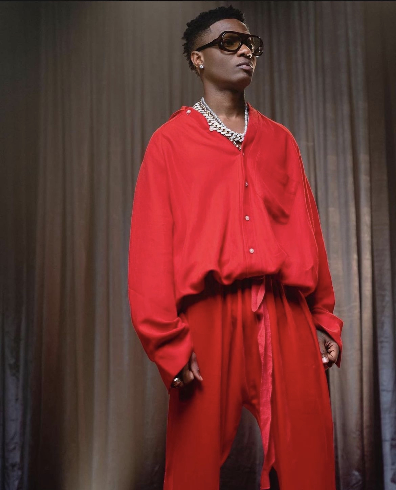
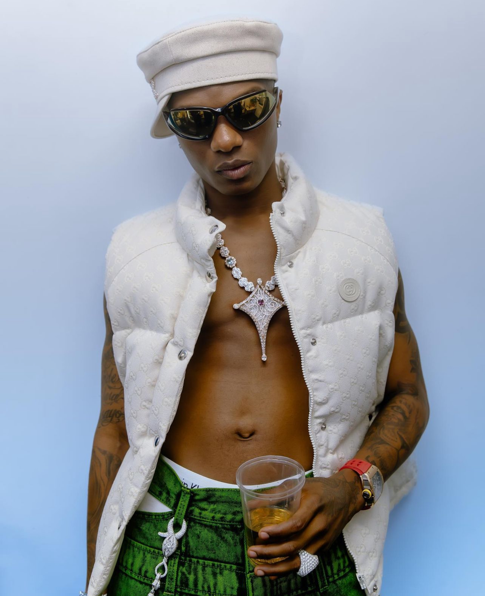

Top Afrobeat Artist In Ngeria
WIZKID (POPSY)


- Full Name: Ayodeji Ibrahim Balogun
- Date Of Birth: (born 16 July 1990)
- Wizkid is a Nigerian singer and songwriter
- Born in the Ojuelegba suburb of Surulere, Lagos
- Wizkid is a prominent voice in the emerging Afrobeats movement
- His music is blend of Afrobeats, afropop, R&B, afrobeat, reggae, dancehall, and pop.
See More About Wizkid
DAVIDO (OBO)


- Full Name:David Adedeji Adeleke OON
- Date Of Birth:(born November 21, 1992)
- Davido is a Nigerian singer, songwriter and
record producer
- He is regarded as one of the most important
Afrobeats artists of the 21st century
- He is credited alongside Burna Boy and Wizkid for popularizing the genre globally
See More About Davido
BURNA BOY (ODOGWU)


- Full Name:Damini Ebunoluwa Ogulu MFR
- Date Of Birth:(born 2 July 1991)
- Burna Boy, is a Nigerian singer, songwriter and record producer
- He rose to stardom in 2012 after releasing "Like
to Party", the lead single from his debut studio album L.I.F.E
See More About Burna Boy
OLAMIDE (BADOO)


- Olamide Gbenga Adedeji was born in Bariga, Lagos State
- Date Of Birth:15th March 1989
- He is the second of Pa Adedeji's three children with Ronke Osisanya Adedeji, his second wife.
- TemmyGold and Eniola Olamilekan (also known as DJ Enimoney) are Olamide's two Siblings
See More About Olamide
REMA (RAVE LORD)


- He started making music at a young age.
- He began releasing music online when he was just 18 years old
- His first song, "Iron Man" was released in 2020
- Rema got global recognition In 2022 when make a remix of his song "Calm Down" which make him to the
billboard 100 and earned him a billion streams on Spotify
See More About Rema
ABOUT US
CONTACT US